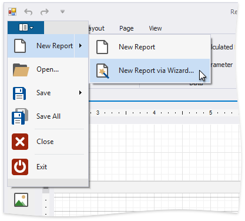

Add New Reports
This topic explains how to create a new report in the Report Designer.
Tip
Before you start, make sure to back up the current report.
Create a New Blank Report
You can use one of the following commands to create a new report. The created report contains three bands - Top Margin, Detail, and Bottom Margin. Refer to the Use Report Elements section for information on how to add controls to the report.
Use the Ribbon's Home Tab
Click New Report.

Use the Ribbon Application Menu
Click the application button and then New Report.

Use a Shortcut
You can also use the CTRL+N shortcut to create a new report.
Create a New Report Using the Report Wizard
The following commands run the Report Wizard. Go through the wizard's pages to get a predesigned report.
Use the Ribbon's Home Tab
Click New Report and then New Report via Wizard....

Use the Ribbon Application Menu
Click the application button and then choose New Report | New Report via Wizard....

Use a Shortcut
You can also use the CTRL+W shortcut to run the Report Wizard.